Strip Club Empire is a mature (18+) management sim. This site includes suggestive and topless club imagery and marketing screenshots. Not a sex game - but not safe for kids.
By entering you confirm you are at least 18 (or the age of majority where you live) and want to view mature content.
All characters depicted are adults. No real-money gambling.
18+ Mature ComedyPublic Build DiaryDay 1 = July 9, 2026
The Dev Log
build the club, manage the chaos - and write it down
Strip Club Empire is a single-player management sim for PC, in the spirit of Two Point Hospital and Planet Coaster. You inherit your uncle's run-down club, design the floor, hire and schedule the staff, and run the night in real time. Profit is balanced against the police. It is rated M: adult comedy, never graphic. The censor bar is the joke, and nothing under it exists.
This log covers more than the 2026 sprint. The idea goes back to 2013, with roots earlier than that: the designer worked the Vegas club floor in the early '90s and learned the business from the inside. Two later collab attempts stalled before 2026, when AI-in-Unity finally made a solo build realistic. Day-by-day entries start there. Day 1 is July 9, 2026. Work often ran past midnight, so each day counts from when the work started. Failures stay in - a lot of what shipped came from finding out the plan was wrong. - -
This is a public diary of progress and chaos - not a full design document or systems bible.
Early '90s → 2021: Real Vegas club floor as inspiration; idea and two collabs; hold. 2026: AI unlocks solo development.
Before Day 1 : The whole game is playable in gray boxes, from the build tools to the Sunday report, and saves and loads.
Day 1: Regular customers who remember you, and bar fights over a stolen seat.
Day 2: Free-form construction. Buy ground, draw walls, and any enclosed space becomes a room.
Day 4: The money is measured for the first time, and the club loses money every single night.
Day 5: The manager's office desk becomes the game's menu.
Day 9: The first real dancer takes the stage.
Day 11: Dancers are built from interchangeable parts, so no two look alike.
Day 21: Customers get a real body, and drinking starts to work like drinking.
Day 24: It turns out nobody could ever walk to the bar in the starting club.
Day 25: Dancers get rivals, and dancers can quit.
Day 28: The dialogue engine that will run the story.
Day 29: The first Windows build that boots and runs. You now inherit a club that is already open, and the tutorial script arrives.
Day 30: Sell your club and move up. A bank loan, and a way to lose the game.
Day 32: A real played week against the spreadsheet forecast, and the spreadsheet loses.
Day 34: The first staff member in finished art walks onto the floor: the cocktail waitress.
Day 37: The first drunk customers in the project's history, and the first one to throw up.
Day 38: The star rating stops lying.
Day 43: Customers are assembled from many parts.
Day 48: The tutorial runs start to finish, and a full police raid is earned in ordinary play.
Day 52: The DJ speaks.
Day 54: ID checks at the door, and the law behind them.
Day 57: Four weeks played to win, and the club is dying.
Days 57–58: The player's own character gets a body, and the family becomes Greek.
Day 58: Point the club at your own music folder.
Day 60: Sandbox mode.
Day 61: Uncle Spiro gets a body.
Day 62: Draw a room and the game sells you the floor inside it.
Day 63: A full studio credit roll with nearly one name in it.
Day 64: DJ Rectangle joins the club as himself.
Day 65: The trash goes out the back door. - -
Newest chapters first. Progress and chaos - not a full design document. NSFW-labeled captures stay out of the gallery.
Day 65 - Taking out the trash
September 11, 2026 (finished in the early hours of Day 66)
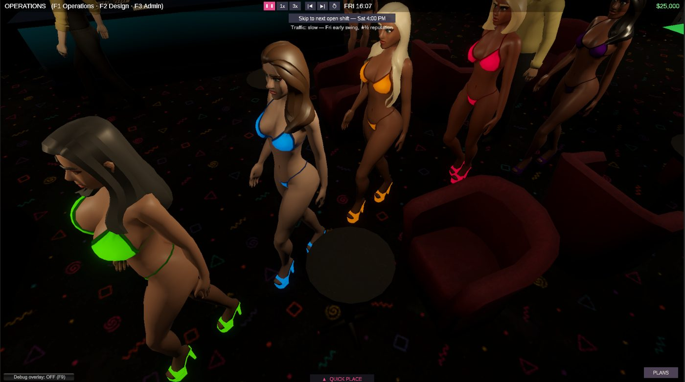
SCE_d66_ss1.PNG
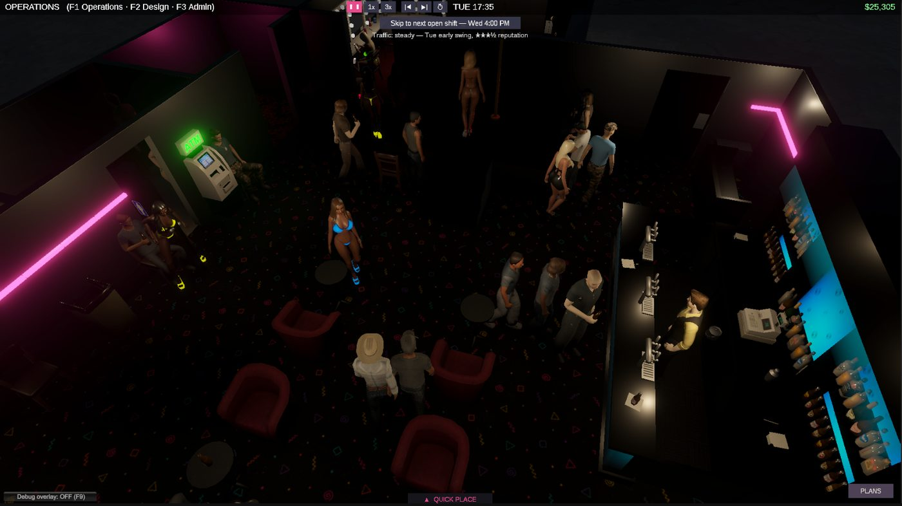
SCE_d66_ss3.PNG
The last unbuilt janitor system, and the first thing in the game that lives outside the building.
Bins fill up. Every trash bin shows how full it is with the designer's low, full and overflowing models.
The trash run. The janitor pulls the bag, carries it out the back door to a dumpster on the lot, tosses it in, turns, wipes his hands and walks back.
The dumpster is the first outdoor item. It stands on the lot, can be moved and can never be sold ("stays with the lot"), and every new game places one behind the back door.
Along the way
It costs a quarter of the janitor's night. Measured on the same five-star club, Saturday 5 pm to close: with the trash loop off, 6 messes were left at close and average cleanliness was 94.8.
The comparison isn't clean. The waitress clearing tables makes litter disappear without touching a bin, and the janitor on the loop-on night was lazier than the one on the loop-off night.
Days 64–65 - DJ Rectangle, carried props lighting, the money you left on the table
September 10–11, 2026
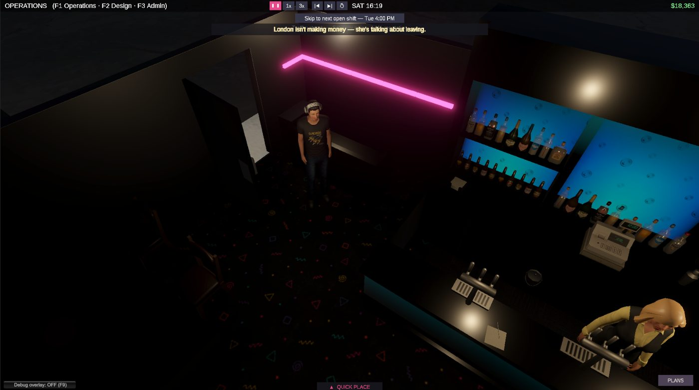
d_66_ss2rectangle.PNG
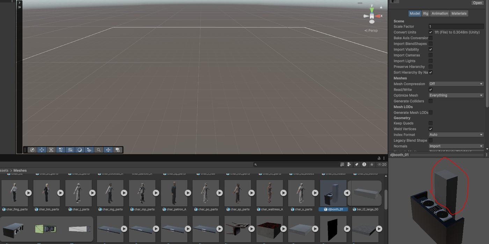
dj_station.PNG
DJ Rectangle joins the club. The club DJ has a real body at last: the real DJ, appearing as himself, modeled and painted by the designer. Every DJ you hire is him.
Carried things are lit like the people carrying them. Trays, drinks, bottles, bills, phones, mops and buckets are now lit by the same lights as whoever holds them.
What you left on the table. The Sunday report gained a block of money the club missed, one plain sentence per cause naming the fix: covers nobody collected, drinks nobody poured, dances with no free chair, VIP customers turned away for want of a room.
Along the way
The game had been counting the lost money all along. Five running dollar totals of missed sales existed, with nothing reading them.
It explained only a seventh of the four-week collapse. Looking back at the Day 57 playthrough, the new block would have named the unworked bar on the first Sunday, but the real hole was wages against a two-star crowd.
Days 63–64 - A credit roll with one name in it, and playtest 59
September 9–10, 2026
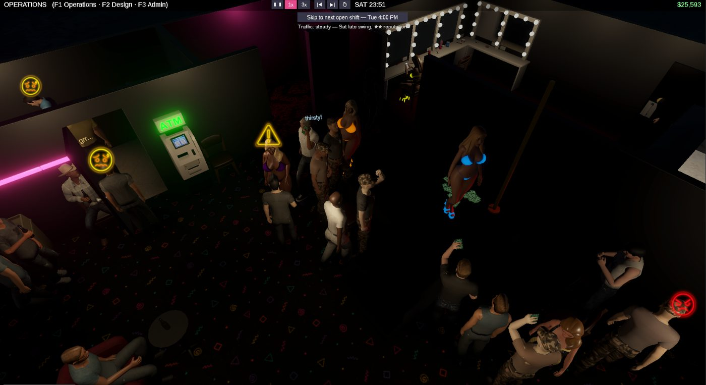
SCEd64_ss1.PNG
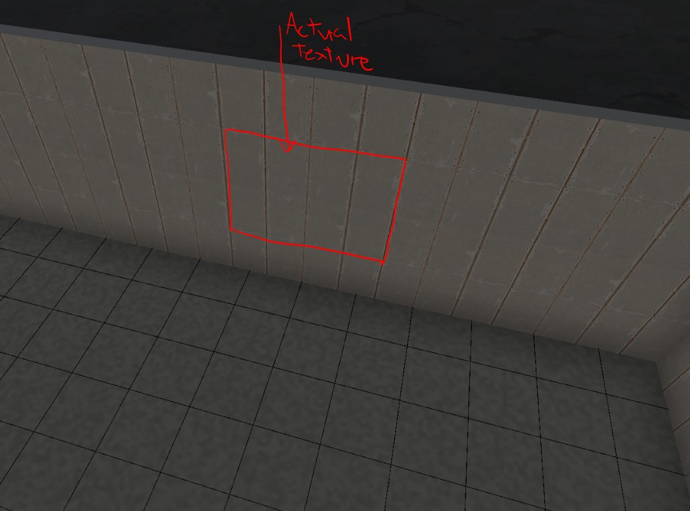
dryall_uv_ratio.PNG
The credit roll. Settings → About → "Roll the credits" plays a full, formal studio credit roll, completely straight: 68 credits across ten sections, and nearly every job goes to the same person, the designer.
Paint stops at the inside of the wall. Outside stays stucco, the way a real building works.
Six bugs from the designer's 59th playtest. The pink and blue restroom stalls no longer turn white when the club opens.
Standing and crouching at the rail. On the designer's ruling that "in a real club they mix it up", a dancer working the stage edge now dances standing about one time in four.
Along the way
The wall texture, fixed twice. The first fix tied one repeat to the wall height, and its own check passed.
An argument through a wall. A dancer's boyfriend came within the wrong scale of her with a partition between them, and the old distance-only check would have started the row right there.
Days 61–63 - Building a club from nothing
September 7–9, 2026
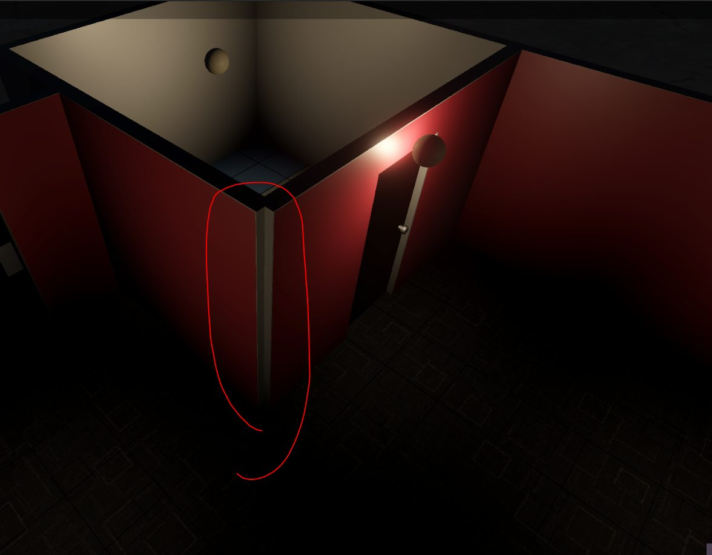
outside_corner_gaps.PNG
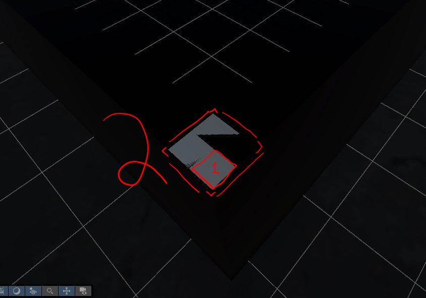
corner_sorting.PNG
Sandbox starts on a truly blank lot, with a banner that walks you through the designer's build order: enclose a floor, place your office, cut a front door, cut a back door.
The office is one unit. Desk, safe, light, walls and door, placed and rotated together, inside the building, outside it or straddling the wall.
Draw a room, buy its floor. A new construction law in both modes: draw walls anywhere, and the moment a click closes a loop, a confirm box itemizes the price. For example: "Build this room? cash.
A requirements checklist. Front door, rear door, office, cashier.
Along the way
A wall tool that couldn't build a wall. The designer asked for the sandbox to open with the wall tool in hand.
The loop detector had to agree with the game. On the story club, a wall drawn across the main floor was promised first as two rooms, then as one, before the detector matched what the game really did: the strip it cut off opened into the cashier's gap, so it was never a room.
Days 61–62 - Teaching Spiro to walk
September 7–8, 2026
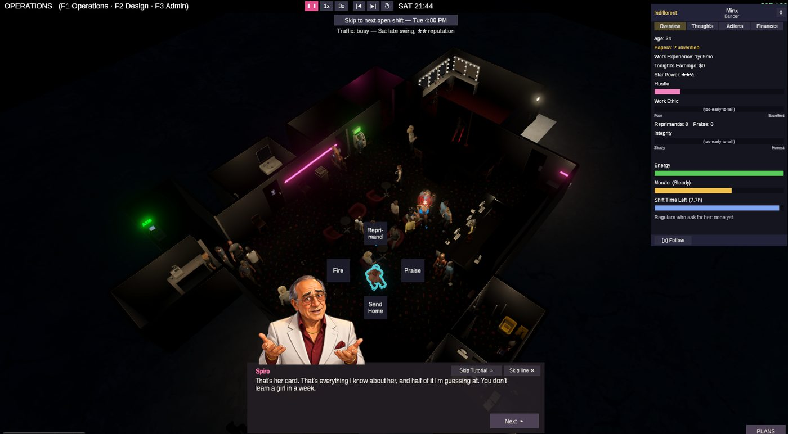
SCE_d61_tutorials.PNG
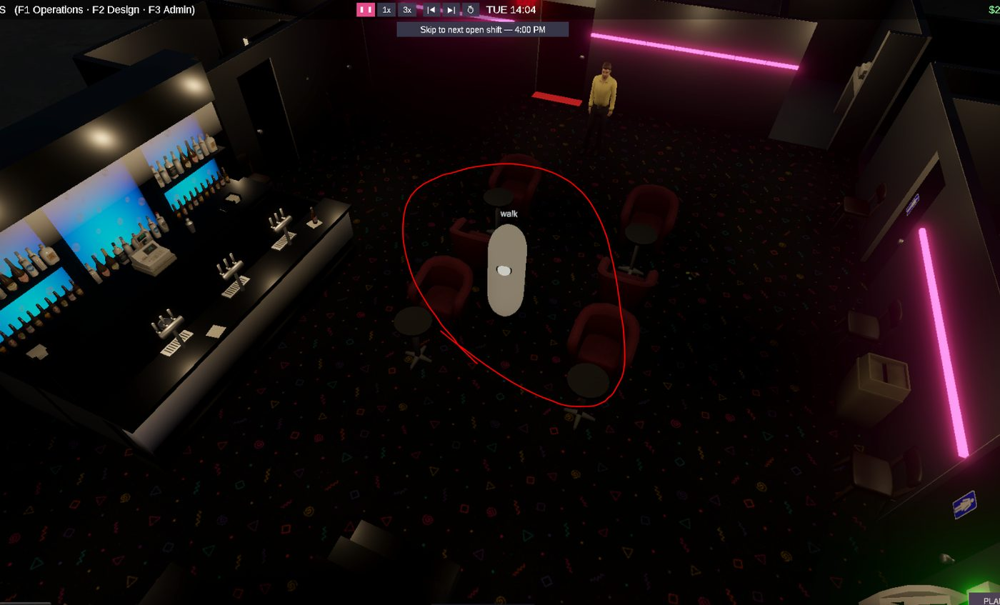
capsule_after_momma_jo.PNG
Spiro stops walking backwards, and the manager trails behind his guide instead of racing ahead.
The designer's second full tutorial playtest, and all nine problems he listed were fixed. The dancer Spiro tells you to phone always picks up.
Mama Jo in her real body in the tutorial, and only ever one of her.
Spiro's glasses are see-through.
Along the way
The uncle who walked backwards. The designer saw Spiro moonwalking through his own tutorial.
The manager led every walk. He was ahead of his guide in about 90% of samples and arrived first on every walk.
Days 60–61 - Sandbox mode, Spiro gets a body, and the office turns
September 6–7, 2026
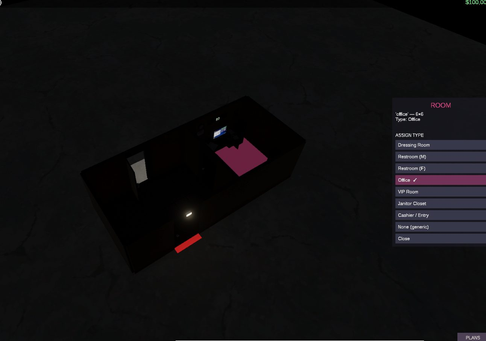
sandbox.PNG
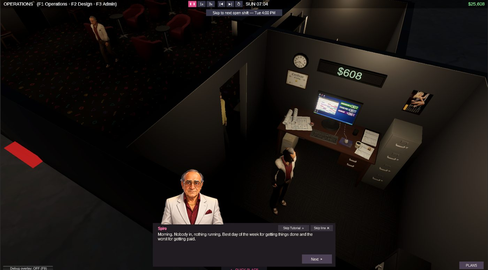
dual_spiro.PNG
Sandbox mode. A second way to play beside the story. The title screen's Sandbox option starts you on a nearly empty lot with cash on a Monday morning: no staff, no Spiro, no story.
Why sandbox. Players expect one, and the story autosaves, so trying out a layout meant rebuilding it. The stronger reason was that nobody had ever tested whether a well-built club works.
Uncle Spiro gets a body. The tutorial's guide walks the club in the designer's own model instead of a gray capsule.
The office faces any wall. The designer ruled that "having the freedom for the player to orient the admin office to any side is essential." The whole office interior (desk, clickable items, drawer, exit and camera) now turns to face whichever wall its door is on, and every clickable item sits in the same spot on screen whichever way it faces.
Along the way
"Reset the club to day 1", when it already was. The designer asked for the clock, grime and mess to be reset before saving his layout, so players would start fresh.
Ebony was announced twice in one set. Placing any furniture silently rebuilt the stage and ended her set, and when her turn came round she climbed back on and was introduced again.
Days 58–59 - Your own music, the tutorial done properly, and daylight with a way back
September 4–5, 2026
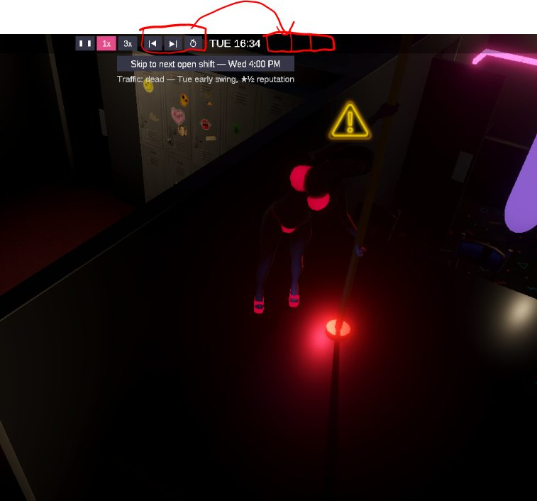
move_mini_music.PNG
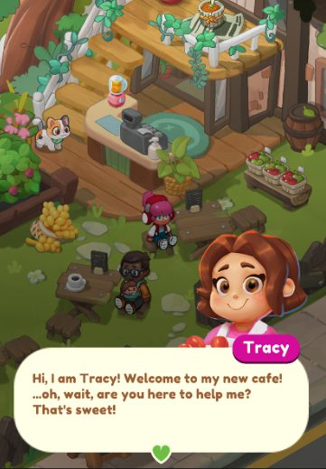
tutorial_pop up.PNG
Play your own music in the club. Settings now has "Your own music".
Previous, next and repeat, three small buttons beside the clock that work for both the club's music and yours.
The tutorial, done properly. The camera follows Spiro everywhere and the manager walks with him. Everything the tutorial wants you to click pulses and stops once you've clicked it.
Speaker portraits. The designer's seven portraits arrived (five Spiro expressions and two for Mama Jo) and stand on top of the dialogue box, hands and all.
Along the way
The roof that was never built. Real day and night made the club's interior brighter by day.
The look nobody else had seen. Saving the baseline revealed that the designer's machine carried personal lighting tweaks that override the shipped settings, so a fresh install had never actually shown the look he'd been tuning.
Days 57–58 - The player gets a body, and the family becomes Greek
September 3–4, 2026
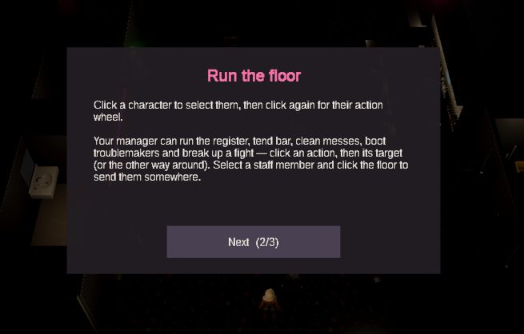
female_manager_revision.PNG
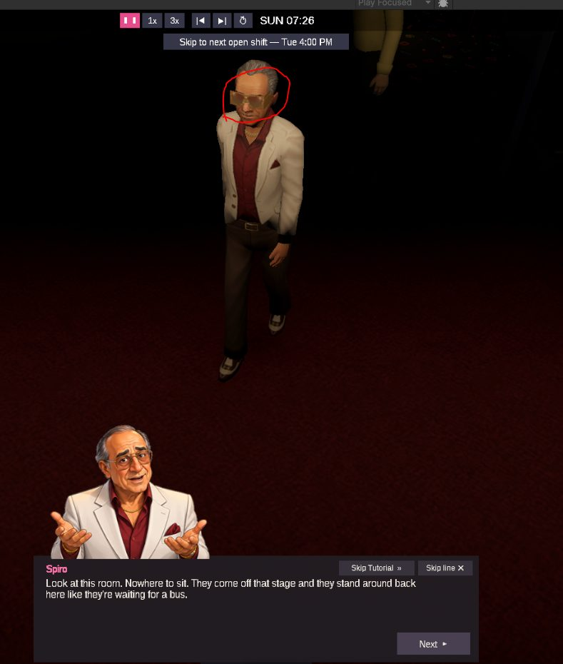
spiro_glasses.PNG
The manager has a body. The player's own character got the designer's real model: first the female version, then the male one a day later. She is the first character who isn't a hire.
Sal becomes Spiro. The uncle who leaves you the club is no longer Sal but Spiro, and the family name is Papadakis. The designer judged the Italian club owner a worn cliché.
The family line, stated. Spiro now says how you're related: you're his sister's kid, worded to fit either manager.
Every word in American English. A read-through looking for anything specifically Italian found almost nothing, and found British English instead: "car park", "fortnight", "licence".
Along the way
Near-black hair. His hair was painted at its final darkness, so reusing her hair setting turned it almost black. - -
Days 56–57 - Four weeks played to win, and the club was dying
September 2–3, 2026
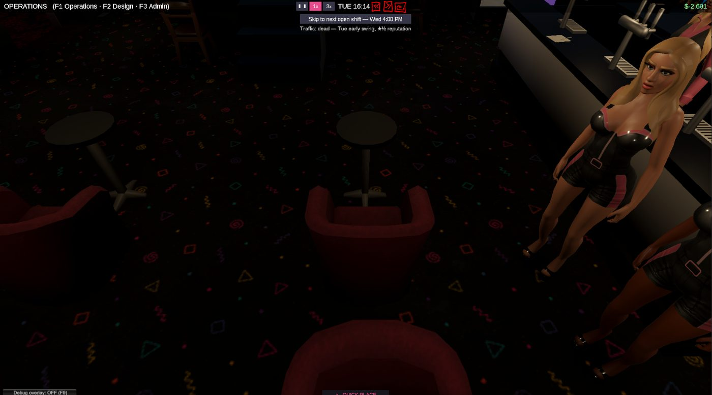
music_player_mini.PNG
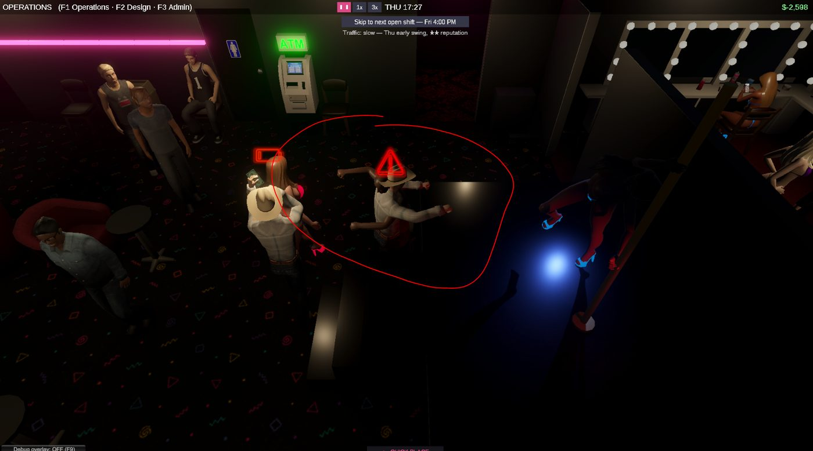
patron_fight.PNG
The biggest reality check of the project. Nothing new was built for it. A new game was started from the title menu, the tutorial weekend was played, and then four full weeks were played through the game's own buttons, trying to win, with no debug money and no shortcuts.
The club served many men and poured many drinks. Cash went from cash to cash and reputation slid from 4.0 to 3.1 on its ten-point scale.
Week by week: +cash then −cash −cash and −cash. Revenue sat around cash to cash a week and fell to cash in the last week. Wages alone ran cash to cash a week, plus a cash monthly bill.
What paid off: a janitor, and not pressing the skip button, which jumped straight over his cleaning shifts. A second waitress cut Friday walkaways from 54 to 24.
What didn't: cash of better flooring, cash of booths and cash of lights moved nothing on any report in three weeks. The booths actually created the pinch where the house mom got stuck.
Along the way
People intervene in dancer fights. The fights stay, since they were a requested feature.
The applications pile refreshes, the tutorial is on by default, and skipping now credits the janitor's scheduled cleaning .
Days 53–55 - The door: a bigger bouncer, ID checks, and the law
August 30 – September 1, 2026
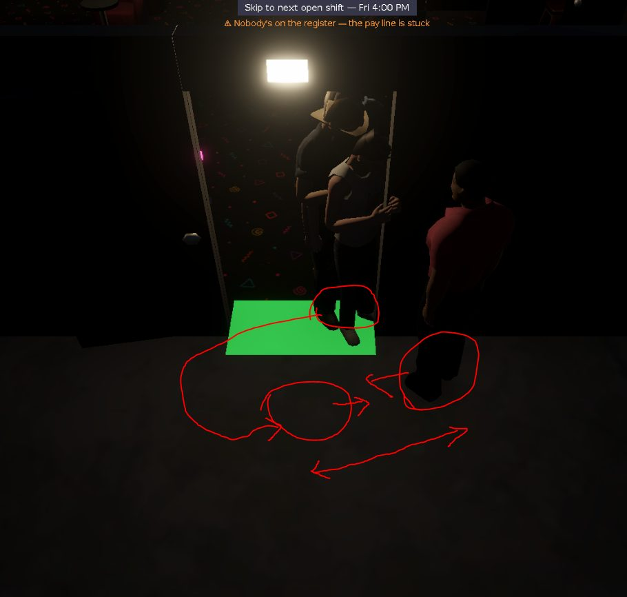
bouncer_facing_wrong_way.PNG
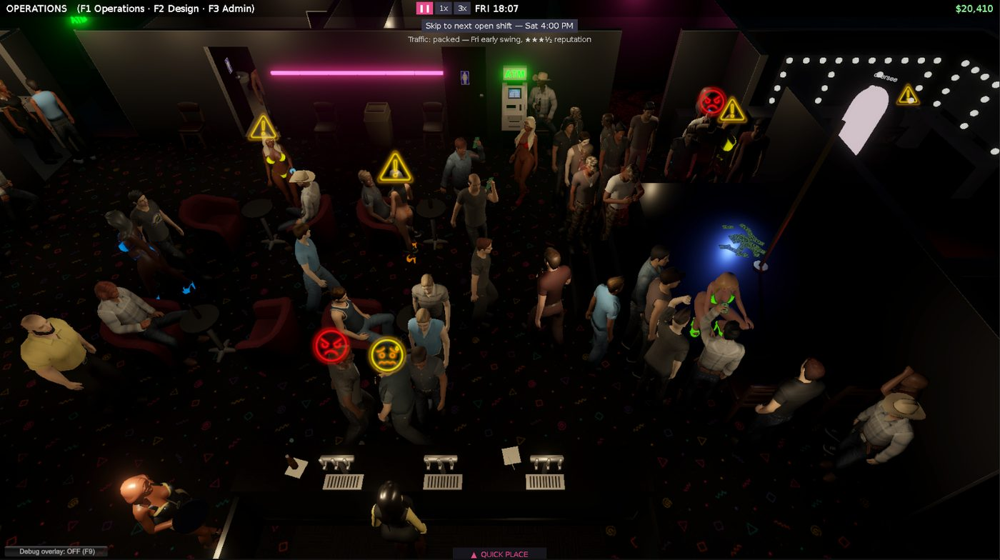
SCE_d56.PNG
The bouncer is bigger than everyone. He got the designer's real body, a fully club-colored shirt and a new mechanic: height.
ID checks at the door. Every arrival at a staffed door stops for a visible ID check.
The law's ladder. Repeat offenses climb from a warning to a cash fine, a cash fine, and finally an order to close.
The lazy bouncer. Low work ethic shows at the door: slower checks, men waved through with a visible shrug, a dawdle back to the post.
Along the way
The ID check happened inside. From a screenshot: IDs were being checked on a tile just inside the door, with the bouncer out on the lot facing into his own building.
The many minutes nobody decided. The designer asked why staff turned up about many minutes into their shift.
Days 49–52 - Staff get real bodies, the janitor was moonwalking, and the DJ speaks
August 26–29, 2026
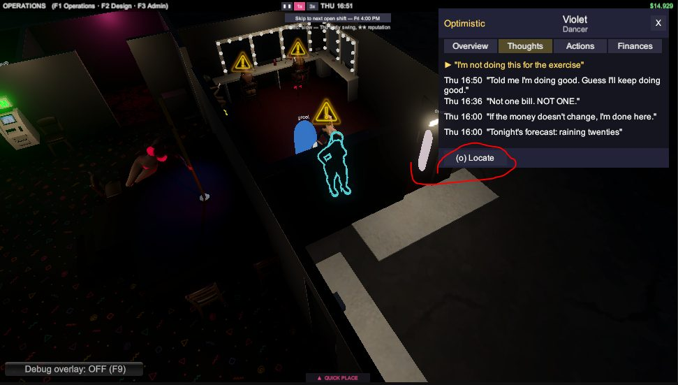
LOCATE.PNG
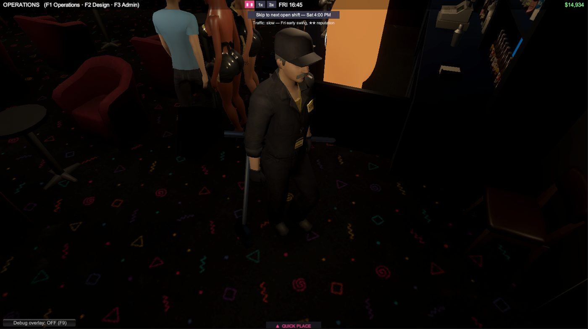
SCE_d49.PNG
The janitor gets his body. The first male staff member in the designer's real art: seven parts, a skin tone rolled at hire, and a uniform where the club's color lands exactly where he painted it, including the JANITOR print on the back.
The vacuum on screen. The machine rides the floor in front of the janitor, and the rating screen now names the top things dragging your rating down, with what to do about them.
Easter eggs, and a cash cleaning crew. Hidden joke appearance toggles, plus a club setting that wipes every mess for cash.
The boss key. The designer's idea "for if someone's girlfriend walks in". One key press covers the screen with a fake "game paused" image, freezes the world and silences every sound.
Along the way
The janitor had been moonwalking for twenty tasks. A gray capsule has no front, so nobody could see it.
A perfect score for an upside-down dustpan. The grip test attached every tool to the right hand.
Days 48–49 - Played like a stranger
August 25–26, 2026
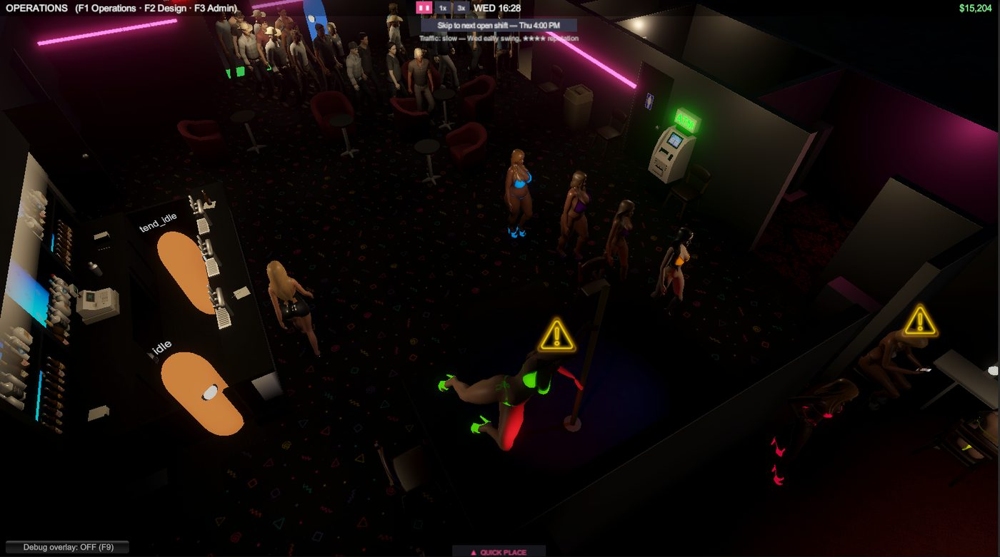
SCE_d48a.PNG
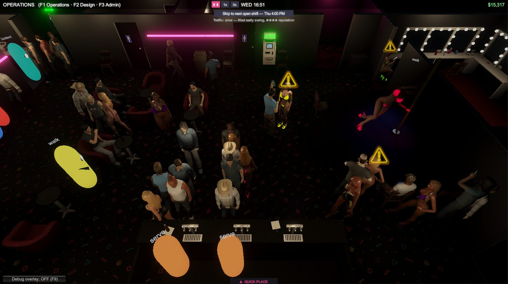
SCE_d48b.PNG
A new game was played through the menus like a brand-new player, tutorial on, for eleven nights, using only the game's own buttons. It produced the list the next day fixed.
The playthrough. many customers, many drinks, and the bankroll went from cash to cash.
The tutorial runs all 34 beats. For the first time, the Saturday tutorial played start to finish, twice.
The whole shady chain, earned. Bribes for the back-corner act, heat building, and a police raid, all seen end to end on an ordinary seeded club with nothing forced.
Paint fills with a price. Double-click fills an area, and a confirm shows the full cost ("Fill area? cash") before anything is spent.
Along the way
The tutorial died at beat 11 for every player. The scene held two copies of the office sheet, and the tutorial watched the one that is never open at night.
Hiring a second bartender replaced the first, and two nights sold zero drinks.
Days 45–47 - The glide, and the VIP room that could never open
August 22–24, 2026
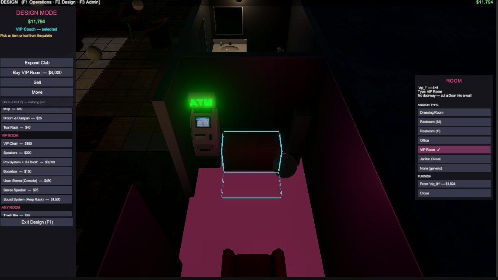
vip_room.PNG
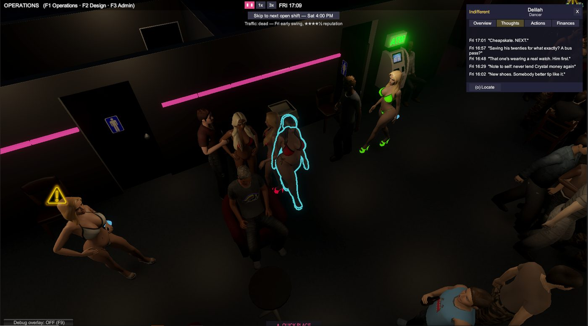
SCE_d45c.PNG
The VIP room opens. A VIP chair brings the room to life. Before it, the room reported "no chair, not operable" and could never run a session. With one chair, two sessions earned the club cash.
Cash in the safe you can see, growing through five stages as the club's money grows.
Furniture knows which room it belongs in. A stall only in a restroom, lockers only backstage. The build menu is headed by room, and picking an item lights up the rooms it can go in.
Seventeen new floors in four price tiers, each with its own shine.
Along the way
The glide. Bodies sometimes slid across the floor with no walk cycle. Neither suspect was guilty.
Props had been wrong in the hand for weeks. Half of the designer's "rotate this prop" number wasn't about the prop at all.
Days 43–45 - Customers get real bodies, and three bar sizes
August 20–22, 2026
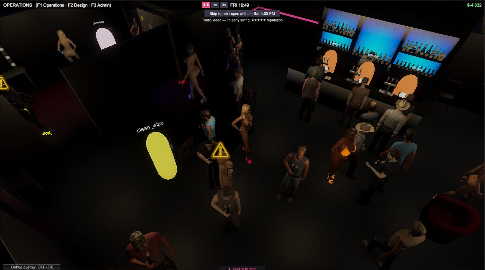
SCE_d45a.PNG
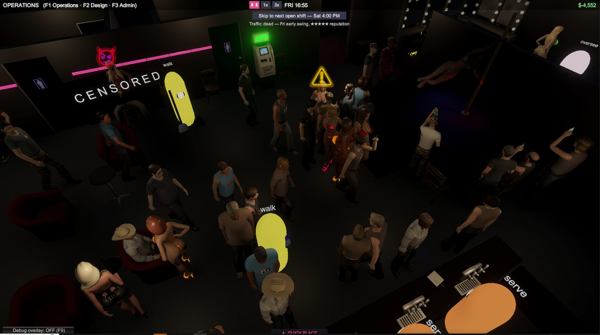
SCE_d45b.PNG
many parts, and no two customers alike. The designer's mix-and-match parts (head, hair, skin, top, bottoms) are in the game, and the old two-piece placeholder customer is retired.
Hair with soft strands. A part can wear two materials, so hair has a solid scalp plus feathered strand cards that always match its color.
The void is black. The flat gray emptiness around the club became pure black, so the club reads as a lit island, and the camera zooms one notch closer.
Round stages with their own stairs. A dancer's path rose through the three one-foot steps exactly, and the rotation sent a second dancer up it unprompted.
Along the way
Ginger cowboy hats. A themed hat worn in the hair slot took a random hair color. Brown read as a felt hat; white, ginger and near-black did not.
The boots were never a mapping fault. They were being handed the wrong texture sheet.
Days 40–42 - The back door, money on the stage, and stuck men standing alone
August 17–19, 2026
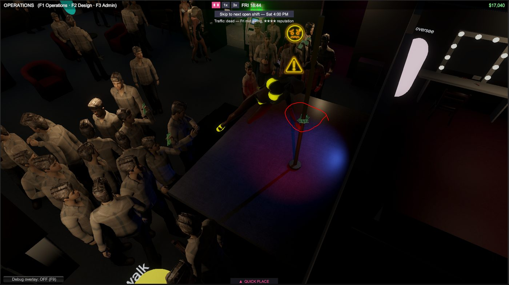
money_on_pole.PNG
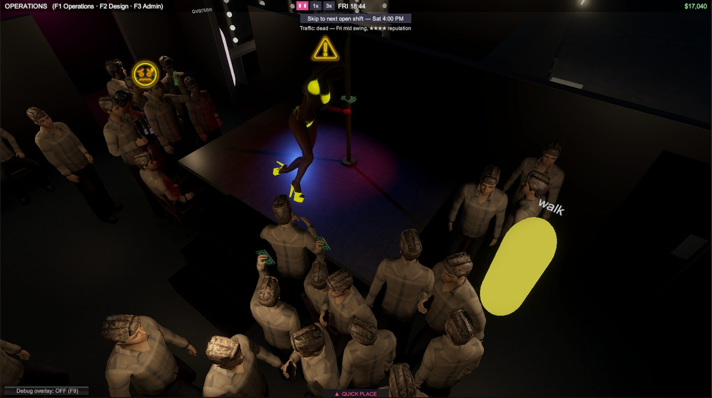
money_on_pole2.PNG
The back door. A staff-only door on an outside wall that customers never use, by construction: many customers in a night, zero ever set foot on its tiles.
Everyone can take a break. The DJ, the house mom and the cashier now tire like the bouncer. The music never stopped while the DJ was out.
Money on the stage again. A happy watcher tosses bills that pile up near the pole, and a generous throw lands as a three-bill wad, so the pile doubles as a popularity gauge.
Doors that move, and a front door that swings. Move a door and the old opening is walled up in the neighboring paint.
Along the way
The stuck men were alone. Everyone assumed customers froze in the aisles because of crowding.
The carefully built priority rule changed nothing. Staff on an errand outrank moving customers, who outrank loiterers.
Days 38–40 - The rating stops lying, and the first build in 53 tasks meets reality
August 15–17, 2026
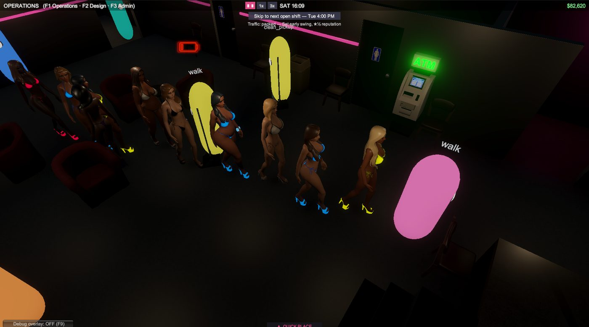
SCE_d40a.PNG
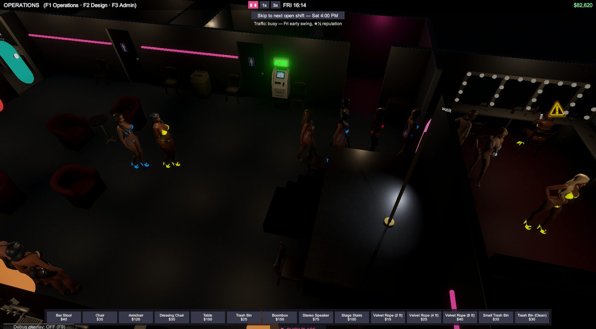
SCE_d40b.PNG
It wasn't cosmetic. The fake stars were propping up his door. Once the credit was removed, the same Tuesday went from 44 expected customers to 3.
Reputation losses by cause. The weekly report now names each one (raid, fight, stage vomit, dancer fight), where it used to call every loss "Police raid". There had been zero raids.
A closed-day janitor is worth about half a star. The next Tuesday opened at 98 cleanliness instead of 29, and the report now tells you the closed-day shifts exist.
The mop bucket rolls along behind the janitor and parks while he mops.
Along the way
The build packaged the wrong club. It shipped the designer's uncommitted working copy: a new game would have started 47% grimy with every room light flattened to one brightness.
The desk in the doorway. The office desk stood mid-room in every build, because one hand-tuned number had only ever been saved on the editor's machine.
Day 37 - Why nobody got drunk, and the first vomit
August 14, 2026
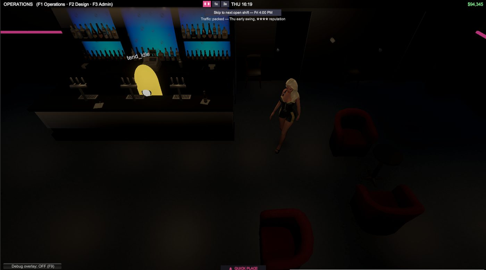
SCE_d37a.PNG
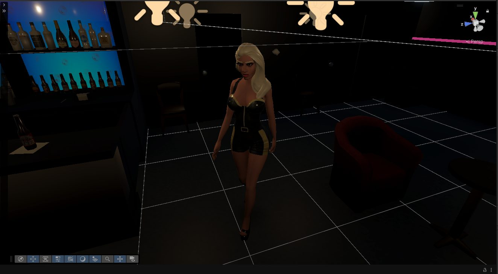
SCE_d37b.PNG
Why nobody gets drunk, measured. Seven full Wednesdays were played. A drink took 26.8 game minutes from wanting to having; the pour was 1.4 of that, and waiting for the waitress was 12.5.
Which wait is shorter. A thirsty seated man now weighs the waitress against the bar, and the waitress walks 25% faster.
The first drunk men. With slightly stronger beer and quicker sips, 6 of many men got drunk: the first non-zero drunkenness the club had ever measured.
Every man drinks at his own pace, kept for his visit and remembered if he returns. Fast drinkers get drunk about five times as often as slow ones.
Along the way
All three of the previous day's fixes moved the plumbing and not the result. Still 0% drunk.
Two identical runs differed by 17.5 points of drunk percentage, so small results are stated as men, not percentages.
Days 35–36 - What "dark" means, the undercover detective, and hands across the bar
August 12–13, 2026
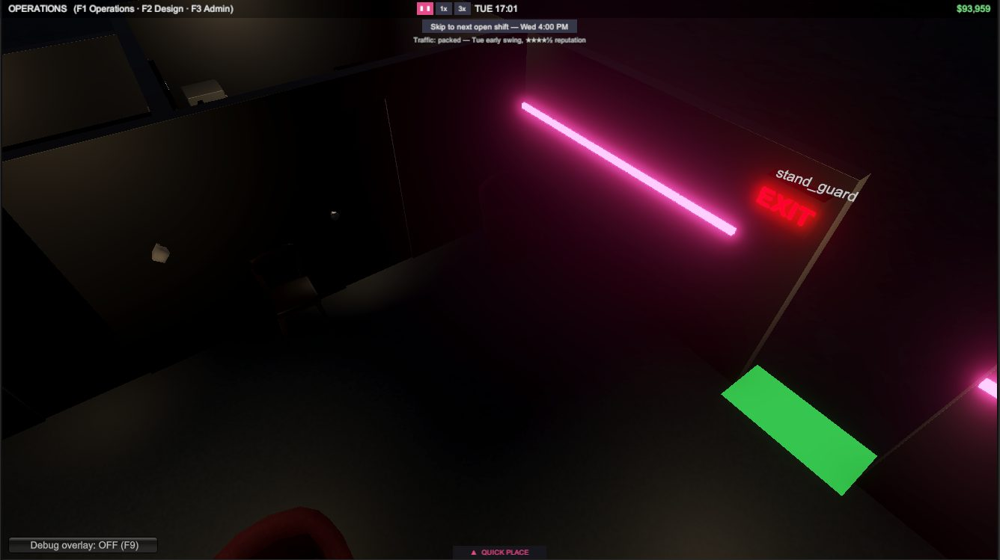
dark_corner.PNG
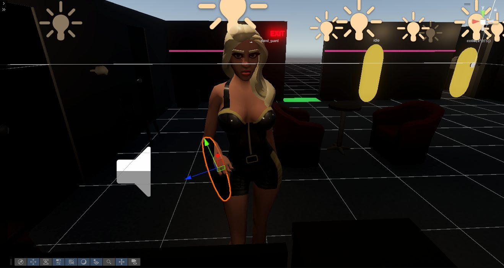
cocktail_tray_position_wrong.PNG
Darkness measured from real light. "Dark" used to mean "far from a lamp".
Dim lighting pays. A moody main floor now earns customers' satisfaction, and a floodlit one costs it.
The undercover vice detective. He looks like an ordinary customer (with a placeholder mustache), nurses one beer at most, tips nothing and picks the darkest seat.
Props change hands on cue. A beer leaves the tray, goes into the waitress's hand and then into the customer's, at the exact frame of contact, and the same glass becomes his drink.
Along the way
The censored act appeared on the stage. Its own seat search was innocent: the designer's floor had zero dark chairs.
A pitch-black corner counted as "lit" by the office light, which as far as the old rule knew shone straight through the office wall.
Day 34 - Promotions, jealous regulars, the club color, and the waitress walks in
August 11, 2026
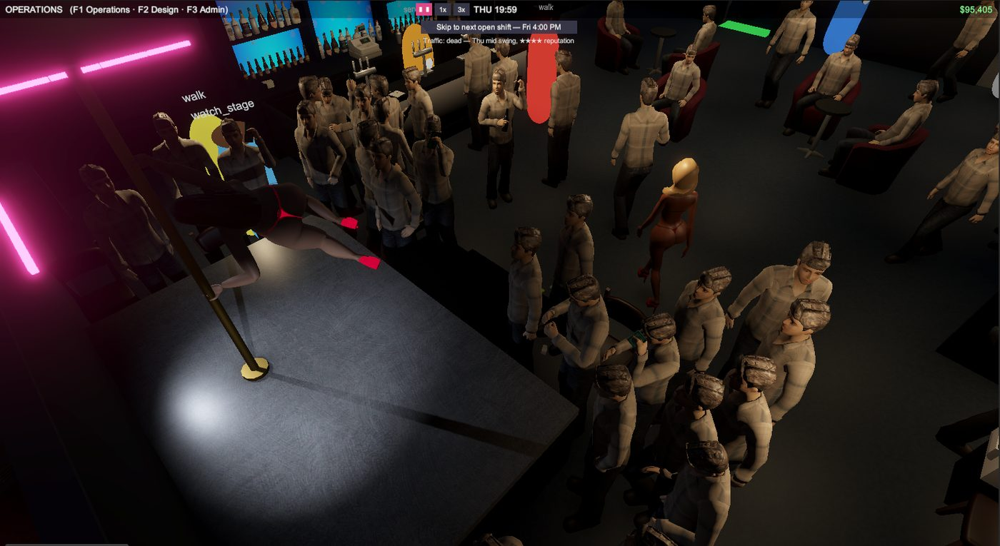
SCE_d34b.PNG
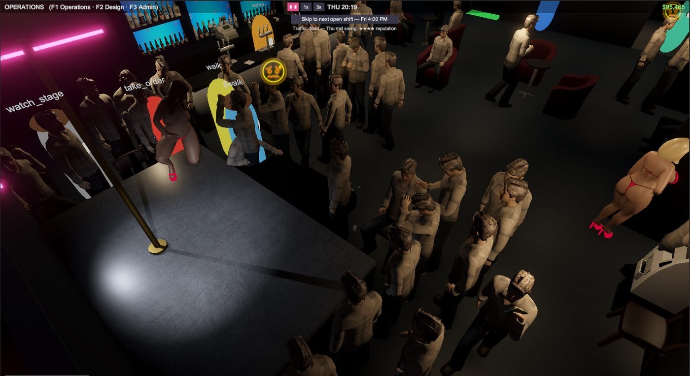
SCE_d34c.PNG
Five promotions: happy hour, two-for-one, flyers, a month-long billboard, and VIP night. Run the same promo on the same weeknight and it builds a following that fades slowly if the habit breaks.
Jealous regulars. A dancer seeks out her own regulars first, and they wait their turn. A regular who sees his dancer with another man while he waits gets jealous, and that can boil into a fight.
The house color. The player picks a club color, from a hex value or eight presets, and every uniformed staff member wears it.
The cocktail waitress walks onto the floor. The first non-dancer staff member built from the designer's own art: one body, three heads, shared hairstyles, ten skin tones and ten animations cut at his exact frames.
Along the way
The billboard loses money. cash a month at three stars.
Clubs 2 and 3 had no crowd numbers at all, so a player who moved up would have drawn nobody.
Days 33–34 - Work ethic you can see, and two janitors with no broom
August 10–11, 2026
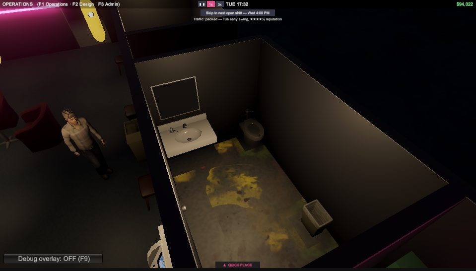
dirty_bathroom.PNG
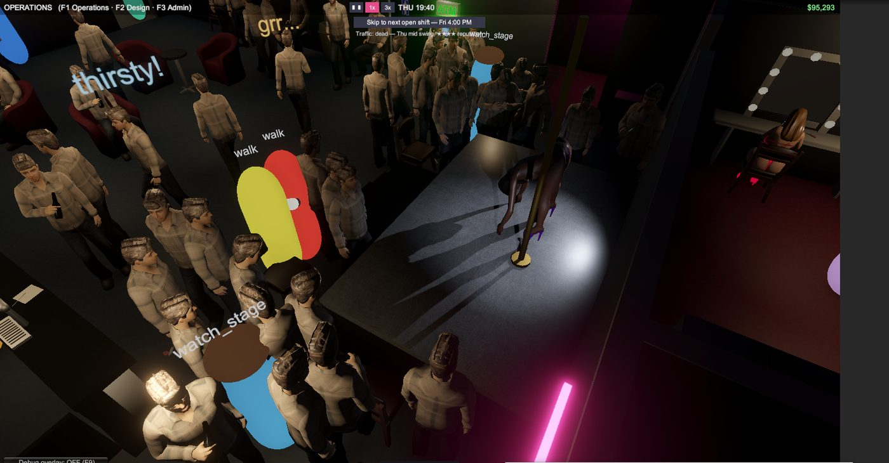
SCE_d34.PNG
Work ethic shows through behavior. A janitor's cleaning speed scales with his hidden work ethic.
Staff arrive before the doors open. The lead time is worked out from the club's own layout, so bigger clubs get more.
Closed-day cleanup shifts. Janitors can now be scheduled on Sunday and Monday.
A regular is a tag he earns, not a wealth bracket. Each dancer keeps a count of her pitches (asked, accepted, danced, lost), so a vanished yes can be traced.
Along the way
Loading a save turned your club into a two-star club. Whatever you had built, the first night after a load traded at two stars.
The janitor had no broom. Weeks of janitor measurements had to be re-read when it emerged that the designer's club had no broom: 72% of the floor litter was something his janitors weren't equipped to pick up.
The day the spreadsheet forecast was tested against the real game, and the real game won.
A played week. Five nights of the designer's club were played at a fixed three-star rating. The game earned cash a week. The forecast said cash 2.3 times too optimistic.
The dirty-club exploit was real. A Friday at zero cleanliness drew many men into a room that holds 40, served them only 38% of the hours they meant to stay, and sent not one home broke.
The door opens at a fair price. The default cover dropped from cash to cash the price a club at the starting rating is actually rated to charge.
Where 80% of the drinks went. A frame-by-frame watch of a full Saturday traced the funnel: the clock asked for many drinks, many men actually wanted one, 91 joined the bar line, 70 were poured and 64 drunk.
Along the way
A cheaper door did not mean more money. Dropping the cover to cash was measured, and cash still made more.
No customer could ever go home broke. A single timer with two meanings re-armed itself instantly.
Days 30–31 - Sell the club, borrow from the bank, lose it all
August 7–8, 2026
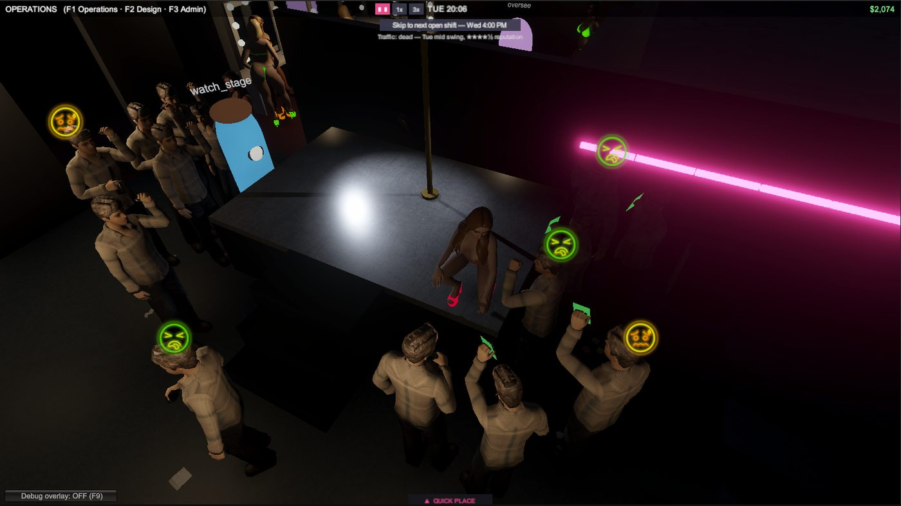
SCE_d31_00.PNG
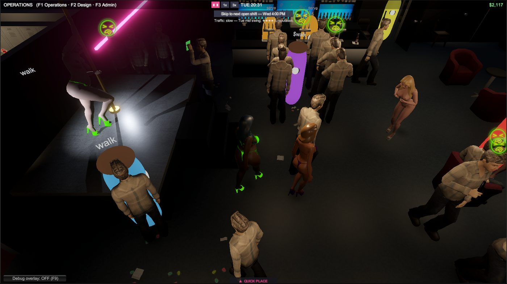
SCE_d31_01.PNG
The game got a ladder to climb and a cliff to fall off.
Sell the club and move up. The gate is money: cash plus what your club is worth must cover the next venue and a build allowance.
Named save slots, with a load list on the title screen.
The sale waits for a closed day, so you arrive with Sunday and Monday to build and hire, and you can still back out.
A bank, and game over. If the Sunday payday leaves the club in the red, the bank offers a loan over the weekly report, and the bank is paid last, after staff and rent.
Along the way
The whale. One big spender paid cash for a single 95-minute VIP booking, cash of it to one dancer, when a typical session earned cash while ten other men waited for the only room.
Toilets nobody used were clogging. The old roll ran per customer per hour against a random bowl, so a busy club clogged toilets nobody had been in.
Day 29 - The first build that runs, and you inherit a running club
August 6, 2026
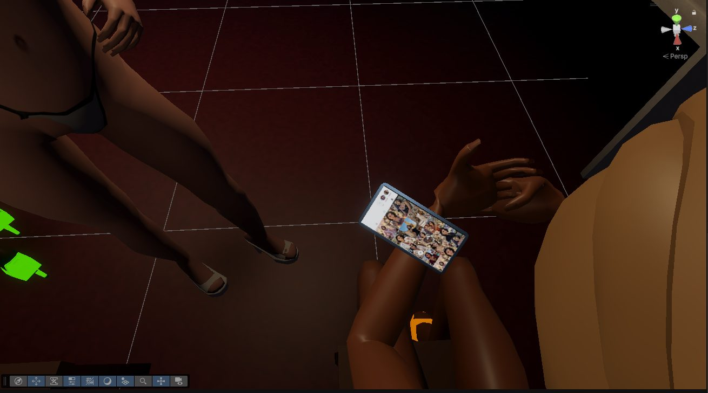
phones.PNG
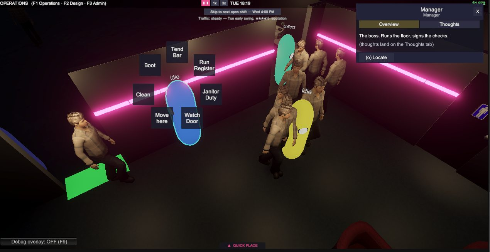
wheel_ui_work2.PNG
One of the biggest days of the project.
You inherit a club that is already open. A new game used to start in an empty building. Now you walk into your uncle's club on a busy Saturday at 9 pm.
The tutorial weekend arrives. The designer's scripted weekend went into the game exactly as he wrote it.
A real settings screen, including five audio volume sliders that had never had a control.
Calling a dancer in. Phone a dancer who isn't on tonight, and she may say no.
Along the way
One line of the script would have frozen the game. It paused the clock while waiting for the shift to end. The engine now refuses that combination.
A second Sal. A random-name test had spawned a janitor called Sal Gruber, which would have put two Sals on the floor during Sal's own tutorial.
Day 28 - A dialogue engine, a photo on every ID, and drinks with a price
August 5, 2026
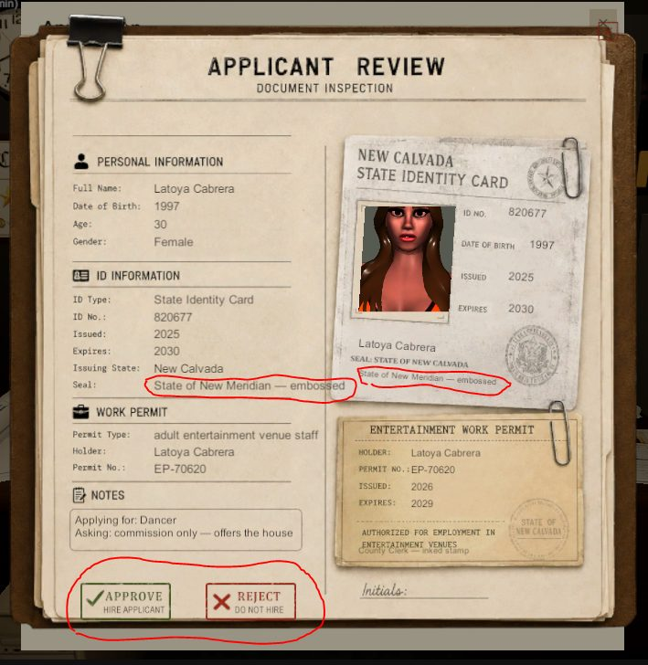
applicant_file.PNG
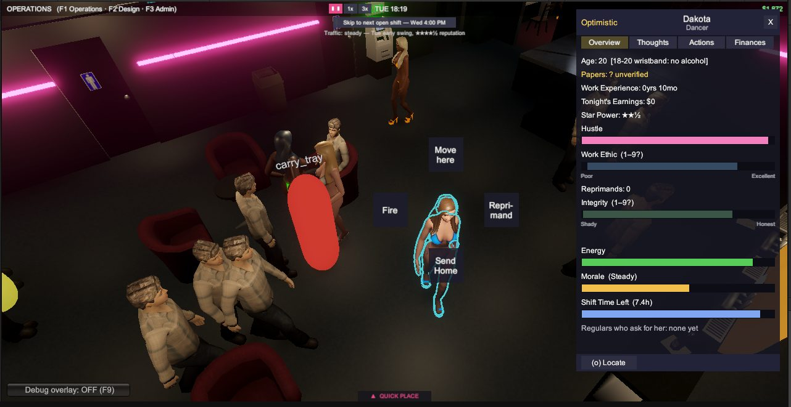
wheel_ui_work.PNG
The dialogue engine. The tutorial and story scenes are driven by a spreadsheet the designer writes.
A photo on every ID. The game takes a head-and-shoulders photo of any character, out of sight, and prints it on their application or staff file.
Drink prices matter. The star rating sets what a drink is expected to cost, and cheap customers walk away sooner.
The manila folder. Applicant review got the designer's folder art: the typed sheet on one side, the ID card on the other, so a mismatched birth year reads at a glance.
Along the way
VIP customers had been sitting on thin air. In every VIP session ever run, the customer's "seat" was the empty floor in front of the couch.
Dancers sank through the backrest. The designer thought the sitting animation sat too far forward.
Day 27 - Handing the designer the controls
August 4, 2026
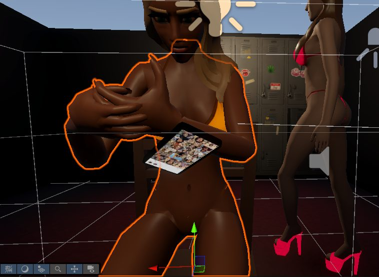
Capture.PNG
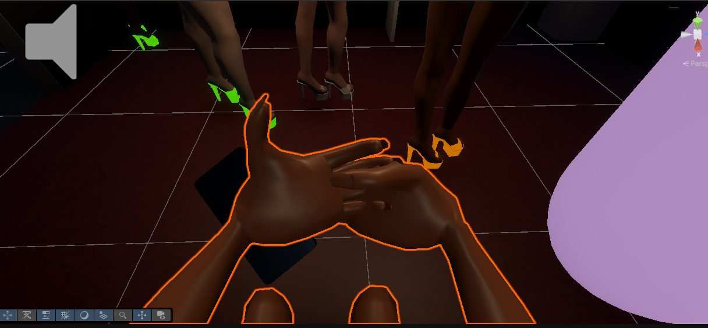
Capture01.PNG
What makes a room a room. One rule: the main floor is the area holding the club's entrance, and every other enclosed area is a room. Rooms grow from any wall.
The illegal back-corner act. At the end of a private dance, a low-integrity dancer may offer a customer an illegal extra in a dark corner far from any light. The censor bar is the whole joke.
Janitors hold their tools, and litter lies flat.
The designer's stage and DJ booth models, measured to within a hundredth of a tile of their footprints.
Along the way
The button that ate its own clicks. The skip button seemed to ignore clicks sometimes.
The chair the vanity refused. The dressing chair was refused on 35 of the room's floor space, because the vanity treated the space in front of it as keep-clear, which refused the very chair it existed for.
Day 26 - The dancer economy, and staff who were never there
August 3, 2026
SCE_d26a.PNGSCE_d26b.PNG
A full stage set in real animation. The designer's rail animations landed, and four dancers in rotation ran complete sets: walk up, three pole moves, get down at the rail, dance for a man, take the tip, collect, leave.
The dancer economy rebuilt. A stage set is never interrupted. Looks now change how often good things happen rather than what they pay.
The janitor needs supplies. A mop and bucket or a cleaning kit from a stocked closet, with a complaint if they're missing. Furniture slowly gathers grime and darkens.
The bouncer works the door. He stands outside beside the line by default and steps inside only during a genuine lull.
Along the way
The bouncer who never worked a shift. Asked why no bouncer had ever thrown out a jealous boyfriend on the designer's saved club, the investigation found the ejection system working perfectly.
The drama happened during the measurement. While the dancer economy was being measured, a real police raid landed a cash fine, and two dancers were lost to a spontaneous snipe that became a row, then a fight, then a double walkout.
Day 25 - Rivals, a reason to quit, and a club that almost shipped wrong
August 2, 2026
SCE_d25a.PNGdancer_anim_reference_screen.PNG
The stage snipe. A dancer working the floor can poach a customer who is actively tipping the girl on stage.
Dancers can quit. Two separate fuses: pay against what she expects (and more attractive dancers expect more), and morale.
Good nights cancel bad ones.
Characters from any set of parts. The dancer assembly system works for any character type now.
Along the way
The club that almost shipped wrong. Every shipped copy of the game would have started on a generic generated layout instead of the designer's hand-built club, silently, because a missing file was treated as normal.
Nobody pitched anybody. The first stage snipe checked etiquette on every man in the room before checking distance: 51 checks, 37 refusals, zero pitches in many minutes.
Day 24 - Can anyone actually get there?
August 1, 2026
bar_positions.PNGbartenders_not_serving.PNG
The day a whole class of bug came to light: the game kept checking whether someone could stand somewhere, and never whether anyone could walk there.
The starting club could not sell a drink. In every new game, the stage and its stairs boxed the inherited bar into a corner, and no bartender could ever reach it.
Two of everything. A written rule for the whole project: nothing may assume one of anything, and two stages mean two dancers performing at once.
The bar line walked into the women's restroom. A 25-deep line ran through a doorway, because doorways are walkable by definition.
Three bar lines and a stuck-body watchdog. The designer can place marker points inside a model, and the game reads them. A bar's capacity is the number of serving spots he authors.
Along the way
The stuck waitress had nothing to do with collisions. It was first blamed on colliders (nothing in the game moves by physics) and then on crowd avoidance.
The gaze diagnosis was wrong. A seated man lost track of the dancer at his side not because of priority but because of angle: locked to his chair, he let go of her somewhere past 55 to 75 degrees to the side, which read on screen as distance.
Days 21–23 - Customers get a body, and a man turns his head
July 29–31, 2026
chair_patron.PNGsitting_bug.PNG
The customer's real body. The designer's patron model replaced the gray capsules for about 95% of arrivals.
One chair, one seat. Each chair became exactly one seat, and a seated customer faces the right way.
The pole becomes the heart of a stage set, with a choice at each move of working the rail, dancing, or going back to the pole.
A drink becomes an object. A customer takes a few quick sips, sets the drink on a table and nurses it. That slow phase is when a light-fingered dancer can steal it.
Along the way
The rig's left and right were mirrored. The planned arm setup would have raised the wrong arm.
A dancer trapped on stage forever. A leftover flag made the tip-collection step finish and restart every frame. Her set timer read many minutes overdue.
Days 19–21 - The whole club was sober
July 27–29, 2026
SCE_33.PNGatm_animations.PNG
Patrons show their moods. When a man turns angry, bored or disgusted, it shows three ways at once (a word on his card, a mark over his head, a quick reaction) while he carries on with what he was doing.
The designer's emote icons. His painted sheet of 16 icons replaced the placeholder punctuation. Only the most important one shows per person.
The ATM becomes a real machine. A customer who runs out of money walks to it, and the club earns a fee the player sets.
Private dances play in full. Two or three complete moves instead of a fixed timer.
Along the way
Nobody was ever drunk. The designer wanted a room that was 10% sober, 25% buzzed, half drunk and 15% hammered.
Then the bar hit a wall. One bar with two bartenders poured about many drinks an hour against 60 wanted, so more than half the room stood in line.
Days 13–19 - The stage set becomes an economy
July 21–27, 2026
Capture2.PNGcapture3.PNG
A stage set with structure. A pole routine, then working the stage edge for tips, then collecting the money, then stepping down for the next girl.
Star Power and work experience on the dancer's card. A first impression that sharpens into her true rating over four weeks, plus visible experience like "1yr 5mo".
Capacity counts everyone. The limit counts customers, dancers and staff together: 60, 80 and 100 for the three club sizes. Hire 50 dancers and there is room for six customers.
Seated customers tip from their chairs.
Along the way
Pole moves that never finished, then finished too well. A 1.2-second timer cut every move: a 4-second move played 30% of the way through, a 6.7-second one 18%.
Paying at the door took two game minutes. Cut to half a minute, five-star Saturday walkouts in the pay line fell from 39% to 3.8%.
Days 8–11 - The first real dancer
July 16–19, 2026
SCE_16-Dancers.PNGSCE_17-Dancers.PNG
The first character in real art arrived, and within three days dancers were being built from parts.
The first real dancer takes the stage. On Day 9 his rigged dancer walked in beside the gray capsules and ran full sets: walk to the stage, climb up, dance a random pick from five routines, climb down.
Dancers built from parts. On Day 11, every dancer became an assembly of body, head, hair, outfit, colors and skin tone, rolled once when she applies and kept for good.
Closed Sundays and Mondays. The entry mat glows green when open and red when closed. Fast-forward now speeds up the whole world, not just the clock.
The crowd follows the designer's own table of how busy the club should be by star rating and night.
Along the way
The old demand formula and the designer's table agreed almost nowhere. A five-star club hit its cap every day.
A screenshot that erased a playtest. A capture tool saved into the project mid-play, triggered a reload, and wiped the whole test run. - -
Days 7–8 - The bar that sold nothing, and the designer's club becomes the game
The economy truth pass. The weekly rhythm finally reached the game: quiet Tuesdays and packed weekends.
New Game starts in the designer's own club. He can save the club he built as the official starting layout. Only the building and furniture are stored, no money, staff or clock.
The door keeps books. Every night now counts who came, who got in and who was lost, and why.
Price controls show their effect. Next to the markup slider in the office: "Bar tonight: many drinks · cash gross − cash cost = cash net."
Along the way
Zero drinks, every night. The audit went looking for a suspected fake-profit bug in the drink books and found the books were honest.
Using the toilet from outside a closed door. Customers walked to the tile in front of the stall and "used" it from there.
The manager's office became the game's menu: a real room with real furniture, where the interface is the stuff on the desk.
The desk is the interface. Click the scheduler for the schedule, the applicant pile for hiring, the staff files for records, the blueprint for Design mode, and the revenue ledger for prices.
Restroom stalls with doors that close while someone is inside.
Mirrors that reflect. Three quality levels, from off to live reflections. Mirrors on the same wall render once, so a five-mirror vanity costs one reflection.
Stage stairs became a purchase. A stage with no stairs next to it is never used, and the dancers grumble about it.
Along the way
The stars that looked off-center. They were nudged down, then sideways, over two tasks. Measured, the row was already centered to a tenth of a millimeter.
Three tries at one office door. The "second door" was first a real club door the designer had placed in the doorway, then the office's own door sitting just out of view.
Days 4–5 - A roofless club goes dark, and the money gets counted
July 12–13, 2026
no_lights.PNGlights_in_pink.PNG
Two big things happened: the club finally looked like night inside, and the first real measurement of the economy came back ugly.
Making it dark. The sun follows the clock but only lights the parking lot. The inside of the club is lit only by the lights you place, and looks the same at noon as at midnight.
The first money measurement. The game's own forecast promised a healthy, bar-driven profit of about cash a week.
The correction. The first diagnosis blamed the single cashier. A day later, with customers arriving naturally, the cashier line stayed short. The real ceiling was the 40-person occupancy cap.
Two features that weren't there. No customer ever refused a high cover. And the weekly rhythm (quiet Tuesdays, packed weekends) had been designed but never connected, so every night was identical.
Along the way
Free entry, one man at a time. A Day 1 change meant to let everyone in free when nobody staffed the cashier only let the man at the front of the line in.
Why the pop-ups never appeared. Two stacked bugs: the pop-up system started once on the main menu and never again after loading a club, and its text had no font.
Day 3 - The click that passed its own test
July 11, 2026
SCE_11.PNGSCE_12.PNG
A day of making Design mode feel right, headlined by a bug that was fixed, verified, and still broken.
A tidier build menu. Six sections. Selling a door restores whatever was there before it.
A crisp selection outline that looks the same on every object and reads on the dark floor.
Light editing that reaches the lights, for one fixture or the whole club, with Reject and Confirm buttons.
Along the way
Selection, twice. Objects could only be selected by clicking the floor beneath them.
The first swatches did nothing. Day 2's light colors and slider had no effect unless a light was already selected.
Day 2 - Build it yourself
July 10, 2026
buy_tiles.PNGSCE_09.PNG
The player stopped decorating a fixed building and started building one.
Free-form construction. Buy ground and wall it in with one click, draw walls point to point, drop a door into a gap or tear one through a wall.
One wall system. The modular wall art was retired. Every wall became one generated eight-foot wall the designer paints, and walls sell back segment by segment.
Room templates. Dress a room by hand once, and the game can pour it into any same-sized space at any rotation.
Lighting becomes a design tool. Ceiling cans, stage spots, wall sconces and neon strips drawn point to point, each with eight colors and a brightness slider.
Along the way
Rooms that wouldn't finish. "Rooms sometimes don't finalize" had no reproduction.
Post-processing had never been on. Wiring a glow effect for the neon revealed that it had never been running at all.
Day 1 - Regulars, bar fights, and a door locked for two and a half hours
The day the numbered tasks began, and one of the busiest days of the project.
Big spenders and the jealous ex. Ballers unlock at three stars and VIPs at four.
Regulars. A satisfied customer is remembered. He comes back with a favorite dancer and a preferred seat, spends a little more each visit, and three bad visits lose him for good.
Bar fights. A customer who gets up for the restroom remembers his seat. If he comes back drunk and finds another drunk in it, they square off.
Work Ethic and the Reprimand. Every staff member has a hidden work ethic. It shows in how fast their energy fades, and a range on their card narrows week by week.
Along the way
The locked door. At 2:43 pm, a club with nobody at the till started turning people away.
The gender system that never existed. Female janitors and male cocktail waitresses were reported as a regression.
Before Day 1 (July 7–8) - Too easy, then teeth
July 7–8, 2026
07-08-26.PNGbar_backwards.PNG
The first balance pass found a game that was far too generous. The next two days gave it teeth and filled the building.
A badly run club still made money. A middling club cleared cash in its first week, and a deliberately badly run one was still in profit.
Real art, and a bigger bankroll. The first real meshes replaced gray boxes at their true sizes. The bar grew to 8×floor space and the main stage to 8×14.
A full staff. A cocktail waitress, a DJ and a house mom joined, and every role got energy and breaks.
Bladders. Beer queues up a restroom visit for later, and the number of toilets in a room is its capacity. A desperate cheap customer relieves himself in a corner. Big spenders just leave.
Along the way
The bar was backwards. The rule that a bar must have its back to a wall guessed which side was the back, and guessed wrong.
Sixteen men at the ladies' room. The first restroom-overflow rule let men switch rooms when their own line got long, and the first playtest piled 16 of them at the women's door.
Before Day 1 (July 5–6) - The whole game, in gray boxes
July 5–6, 2026
SCE_01.PNGSCE_02.PNG
The skeleton of the entire game went in. Everything was a capsule wearing a floating label, and everything worked end to end.
The spine. One clock drives a 24-hour day, three shifts and a Tuesday-to-Saturday week that ends in a Sunday report.
Design mode. A 72×80-tile canvas. Buy land with a brush, then place, rotate, move and sell furniture for a 50% refund. Starting cash was cash.
Crowds and staff. Customers queue and pay at the door, watch the stage, tip, drink, use the restroom, get drunk (they turned green) and leave.
Money and management. Every dollar is booked by type into a weekly ledger. The player's manager is a character you click to move, with a radial menu wheel over anything you select.
Along the way
A queue whose tail landed on an unwalkable tile sent the pathfinding into an infinite loop that froze the editor outright.
Before Day 1 (July 3–5) - Origin, then waking the project
July 3–5, 2026
2015 - Office admin mockup2019 - First real club pass (pre-AI)2020 - Character assembly concept
The club is older than this diary's Day 1. Why this game. In the early 1990s the designer worked as one of the original male dancers at the Olympic Garden in Las Vegas. Knowing the owners and the house manager meant seeing how a real club runs - door, floor, staff, money, and chaos - not just the stage. That first-hand floor is the inspiration under the systems comedy. The long road.
2013. High-concept design doc. Other projects win; no full design yet.
2016. Spare-time collab with a the engine programmer from a shared Sunstorm Interactive past. Modular rooms, labeled static cast, UI concepts, and a character-assembly approach aimed at variety. About two months, mostly design and art on the designer's side; programmer steps away; hold.
2019–2021. At United Power in Las Vegas (art lead), meets programmer Mike Marshalvic. 2021 revive: tighter GDD, more assets, the engine project, early navigation. Scope and unpaid risk kill momentum.
2026. AI wired into the engine hard enough for a real solo attempt. That attempt is this log. What July 2026 inherits is not a blank folder - modular room art, assembly thinking, UI concepts, prior the engine attempts, and whatever still ran. First job: modern engine, playable end to end.
Brought the inherited project onto a modern engine and pushed toward a club you can actually run end to end.
Still shipping
This diary ends at Day 65 for now. The club keeps changing. Wishlist on Steam if you want in when Early Access opens.